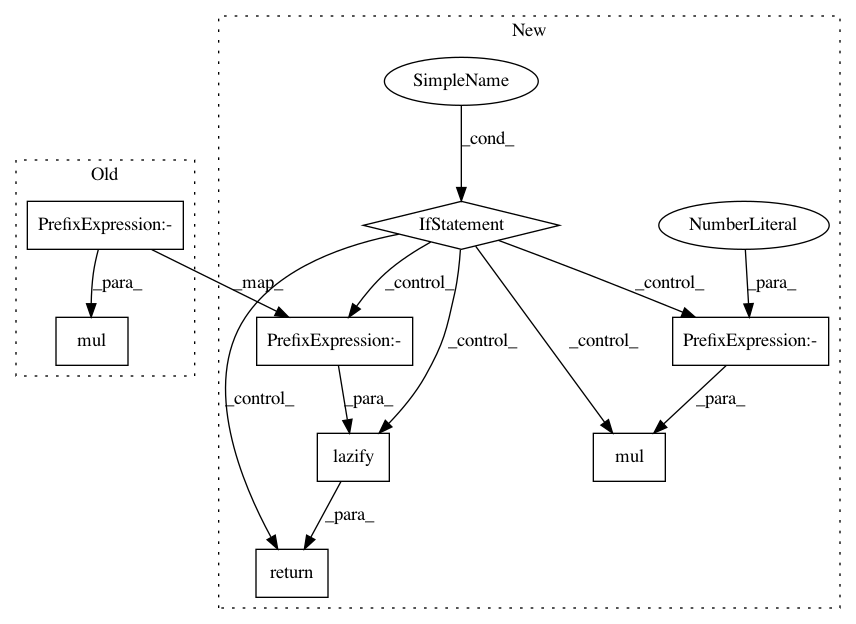

3b003f55a73db83af5774fb4d4d6face1e8cc266,gpytorch/models/exact_prediction_strategies.py,DefaultPredictionStrategy,exact_predictive_covar,#DefaultPredictionStrategy#Any#Any#,297
Before Change
precomputed_cache = self.covar_cache
covar_inv_quad_form_root = self._exact_predictive_covar_inv_quad_form_root(precomputed_cache,
test_train_covar)
return test_test_covar + RootLazyTensor(covar_inv_quad_form_root).mul(-1)
@register_prediction_strategy(InterpolatedLazyTensor)
class InterpolatedPredictionStrategy(DefaultPredictionStrategy):
After Change
precomputed_cache = self.covar_cache
covar_inv_quad_form_root = self._exact_predictive_covar_inv_quad_form_root(precomputed_cache,
test_train_covar)
if torch.is_tensor(test_test_covar):
return lazify(
torch.add(test_test_covar, -1, covar_inv_quad_form_root @ covar_inv_quad_form_root.transpose(-1, -2))
)
else:
return test_test_covar + MatmulLazyTensor(
covar_inv_quad_form_root, covar_inv_quad_form_root.transpose(-1, -2).mul(-1)
)
@register_prediction_strategy(InterpolatedLazyTensor)
class InterpolatedPredictionStrategy(DefaultPredictionStrategy):
def _exact_predictive_covar_inv_quad_form_cache(self, train_train_covar_inv_root, test_train_covar):
train_interp_indices = test_train_covar.right_interp_indices
In pattern: SUPERPATTERN
Frequency: 3
Non-data size: 8
Instances
Project Name: cornellius-gp/gpytorch
Commit Name: 3b003f55a73db83af5774fb4d4d6face1e8cc266
Time: 2019-04-05
Author: jrg365@cornell.edu
File Name: gpytorch/models/exact_prediction_strategies.py
Class Name: DefaultPredictionStrategy
Method Name: exact_predictive_covar
Project Name: cornellius-gp/gpytorch
Commit Name: 76c081b840cd71b20d8ac8692b312ebef95eae75
Time: 2019-04-11
Author: gpleiss@gmail.com
File Name: gpytorch/models/exact_prediction_strategies.py
Class Name: DefaultPredictionStrategy
Method Name: exact_predictive_covar
Project Name: cornellius-gp/gpytorch
Commit Name: 30ca6105f64f1cbbdb7f012bc848ed840e6f3682
Time: 2019-04-12
Author: gpleiss@gmail.com
File Name: gpytorch/models/exact_prediction_strategies.py
Class Name: DefaultPredictionStrategy
Method Name: exact_predictive_covar